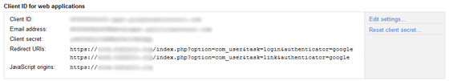
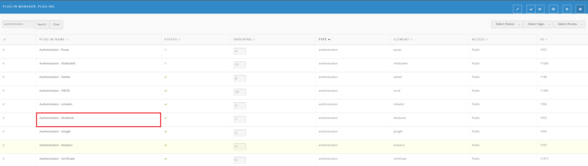
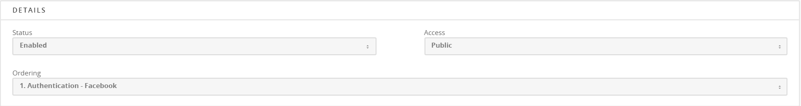
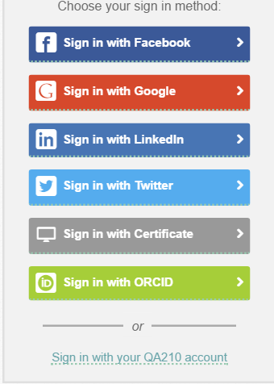

Hub managers
Authentication
Every way of signing in to a hub is an authentication plugin, including the hub's own accounts. A fresh install has Authentication - HUBzero enabled, which checks a username and password against the hub's own member records. Enabling another plugin adds a second way in, so a visitor can sign in with an identity they already hold elsewhere instead of creating a password here.
What ships
| Plugin | What it authenticates against |
|---|---|
| Authentication - HUBzero | The hub's own accounts. Enabled by default for both the site and the administrator interface. |
| Authentication - CILogon | CILogon, which federates campus identity providers. |
| Authentication - Shibboleth | Shibboleth and InCommon. |
| Authentication - Globus | Globus Auth. |
| Authentication - ORCID | ORCID. |
| Authentication - Purdue University CAS | Purdue's Central Authentication Service. |
| Authentication - Google | Google. |
| Authentication - Facebook | Facebook. |
| Authentication - LinkedIn | LinkedIn. |
| Authentication - Twitter | Twitter. |
| Authentication - SciStarter | SciStarter. |
| Authentication - Certificate | A client-side SSL certificate. |
| Authentication - Email Token | A one-time token mailed to the member. |
The ones that federate an institution's own login are covered separately in External authenticators.
Register the hub with the provider first
Every provider that uses OAuth needs the hub registered as an application before it will talk to it. The provider hands back an application ID (or client ID, or consumer key) and a secret. Exactly where you do that, and what the two values are called, differs by provider and changes often; start from the provider's own developer documentation.
Registration also asks for the redirect URIs the provider will send people
back to. A Hubzero hub uses three, where <name> is the plugin's directory
name — google, facebook, cilogon, and so on:
https://<yourhub>/index.php?option=com_users&task=user.login&authenticator=<name>
https://<yourhub>/index.php?option=com_users&task=user.link&authenticator=<name>
https://<yourhub>/administrator/index.php?option=com_login&task=login&authenticator=<name>
The first is used when a visitor signs in, the second when a member links the provider to an account they already have, and the third only if you enable the plugin for the administrator interface. Some providers want only the domain; others, Google among them, want every URI listed exactly.
The hub builds these itself, so they are not a guess:
protected static function getRedirectUri($name)
{
// Get the hub url
$service = trim(\Request::base(), '/');
$task = 'login';
$option = 'login';
if (\App::isSite())
{
// Legacy support
if (\App::has('component') && \App::get('component')->isEnabled('com_users'))
{
// If someone is logged in already, then we're linking an account
$task = (\User::isGuest()) ? 'user.login' : 'user.link';
$option = 'users';
}
else
{
$task = (\User::isGuest()) ? 'login' : 'link';
}
}
$scope = '/index.php?option=com_' . $option . '&task=' . $task . '&authenticator=' . $name;
return $service . $scope;
}
Enable the plugin
- Sign in to the administrator interface.
- Go to Extensions > Plug-in Manager and set the - Select Type -
filter to
authentication. - Select the plugin you want.
- Fill in the application ID and secret the provider gave you.
- Set Status to Enabled.
- Select Save & Close.
Almost every authentication plugin shares four parameters:
| Parameter | What it does |
|---|---|
| Display name | The name shown on the login page. Each plugin defaults to the provider's name. |
| Site login | Offer this provider on the site's login page. Defaults to Yes. |
| Admin login | Offer it on the administrator login page. Defaults to No everywhere except the Authentication - HUBzero and Authentication - Email Token plugins. |
| Auto approve new users | Approve accounts created through this provider without an administrator looking at them. Defaults to No, and overrides the Members component's approval setting when it is Yes. Not every plugin has it. |
Each plugin's full parameter list, with defaults, is in the authentication plugin reference.
What the login page shows
The login page lists every enabled plugin whose Site login is Yes, each as a "Sign in with …" button using its Display name. If Authentication - HUBzero is also enabled, a separate link offers the hub's own username and password below them. A returning visitor's last choice is remembered in a cookie and offered first.
If you disable Authentication - HUBzero, local accounts can no longer sign in anywhere, including the administrator interface. Leave Admin login on for at least one plugin you can actually use.
Members who already have an account
An existing member links a provider from their own profile:
- Open the member profile and choose the Account tab.
- Under Linked accounts, Your account is linked to lists what is already connected and Other options (click to link) lists the rest.
- Select a provider to link it. The
xbeside a linked account removes the link.
When someone signs in with a provider the hub has not seen before, the hub first tries to match them to an existing member — usually by email address — and offers to link the two accounts before it offers to create a new one.
The same tab carries Set local password, which a member who only ever signs in through a provider uses to set the password the hub's shell and file services need.
Second factors
The authfactors plugin group adds a second step after the first one
succeeds. Two ship: Authfactors - Certificate, which asks for a client
SSL certificate, and Authfactors - Google, which asks for a Google
Authenticator code. Neither has parameters; enable them from the Plug-in
Manager the same way.
Password rules
Rules for the hub's own passwords are not part of these plugins. They live under Users > Members > Passwords, which has two screens: the character and length rules, and a blacklist of passwords that are refused outright.
Older screenshots




Rewritten and checked against 2.4-main @ 123ea53b14 on 2026-09-09.